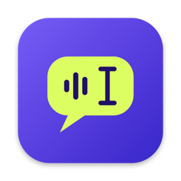
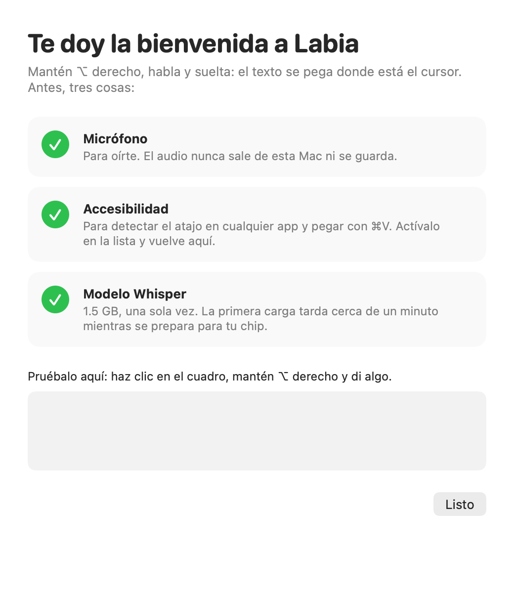
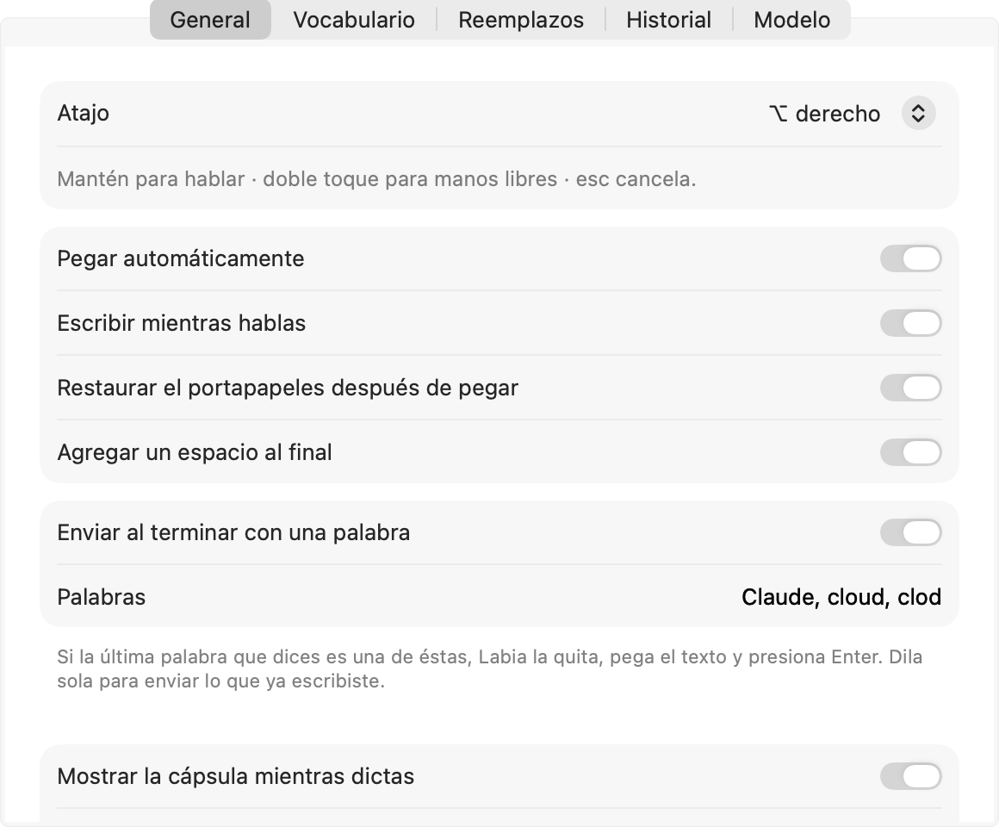
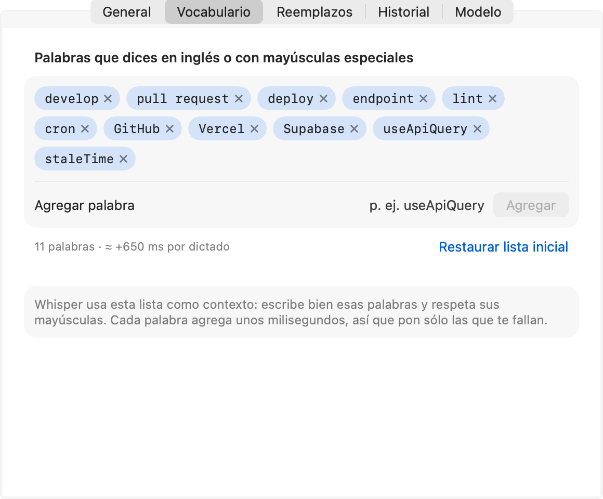
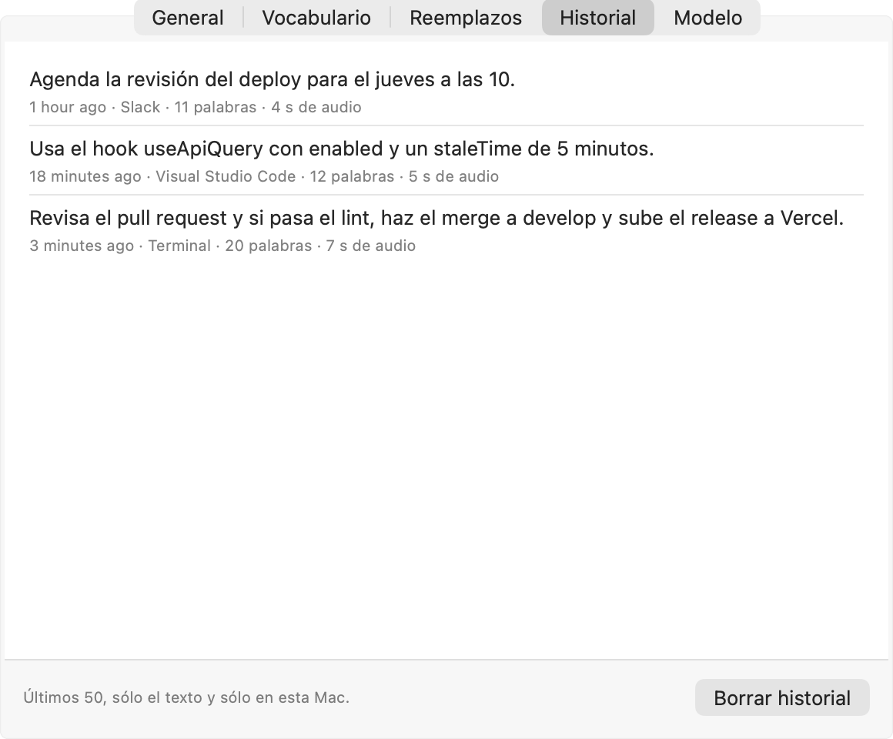

Las ventanas no responden al clic
Ajustes y la bienvenida se abren detrás de todo y no reciben el mouse; sólo se pudo presionar «Permitir» desde Accesibilidad.

Labia 2.0Una bienvenida que te guía paso a paso, unos Ajustes con barra lateral como los de macOS, un menú con lo importante a la vista y ventanas que siempre responden y aparecen en el Dock.
Capturas reales de la app actual. Funciona, pero se ve como un panel de configuración genérico y sus ventanas fallan en macOS 26.




Ajustes y la bienvenida se abren detrás de todo y no reciben el mouse; sólo se pudo presionar «Permitir» desde Accesibilidad.
Labia vive sólo en la barra de menú; con una ventana abierta no hay forma de volver a ella.
Tras una actualización con otra firma el atajo dejaba de funcionar con sólo un «!» en el icono.
Sin estado a la vista, sin la marca violeta y lima, sin iconos por sección; todo pesa igual.
A la izquierda la marca con la onda que habla; a la derecha un solo paso con lo que hace falta y por qué. Usa «Continuar» para recorrerla.
Donde esté el cursor: Slack, VS Code, la terminal, el correo. Todo se transcribe en esta Mac.
El audio se procesa en memoria y se descarta al terminar. Nunca sale de esta Mac.
Accesibilidad le permite oír el atajo en cualquier app y pegar con ⌘V.
Whisper large-v3-turbo, una sola vez. La primera carga tarda cerca de un minuto mientras se prepara para tu chip.
Mantén ⌥ derecho, di una frase y suelta.
La ventana aparece en el Dock y al frente mientras está abierta; al terminar, Labia vuelve a vivir sólo en la barra de menú.
Cada sección con su icono y color. Arriba, un Resumen con el estado de Labia y tus últimos dictados. Haz clic en la barra lateral.
Mantén ⌥ derecho en cualquier app y habla.
Últimos dictados (ejemplo)
Revisa el pull request y si pasa el lint, haz el merge a develop.
Usa el hook useApiQuery con enabled y un staleTime de 5 minutos.
Atajo
Escritura
Enviar con una palabra
Aviso y sonido
Palabras que dices en inglés o con mayúsculas especiales
Whisper usa esta lista como contexto: escribe bien esas palabras y respeta sus mayúsculas.
Se aplican después de transcribir, en orden
Hoy (ejemplo)
Revisa el pull request y si pasa el lint, haz el merge a develop y sube el release a Vercel.
Usa el hook useApiQuery con enabled y un staleTime de 5 minutos.
Agenda la revisión del deploy para el jueves a las 10.
Últimos 50, sólo el texto y sólo en esta Mac.
Si un permiso se pierde (por ejemplo, tras una actualización), Labia te lo dice en segundos y abre esta sección.
Con Ajustes o la bienvenida abiertos, Labia aparece en el Dock y en ⌘⇥ y su ventana responde al primer clic. Al cerrarlas, se va del Dock y sigue en la barra de menú.
Lo que falló esta semana se corrige en la misma versión.
Al abrir Ajustes o la bienvenida cambia a política «regular» (Dock, ⌘⇥, foco real) y al cerrarlas regresa a «accesorio». Así macOS 26 le da el foco y los clics.
Se revisan cada 5 s; si se pierden, aviso en la cápsula y se abre Permisos. El botón borra el permiso viejo de otra firma para que macOS lo pida de nuevo.
Privacidad y seguridad con la dirección de macOS 13 en adelante, y la vieja sólo como respaldo.
Cada pantalla se construye y se prueba sola: capturas con --screenshots, prueba de foco y clic, y la app instalada sólo con la firma «Labia».
Al aprobar esta propuesta se escribe plan.md y se registra el avance en state.md, en una rama feature de gitflow.